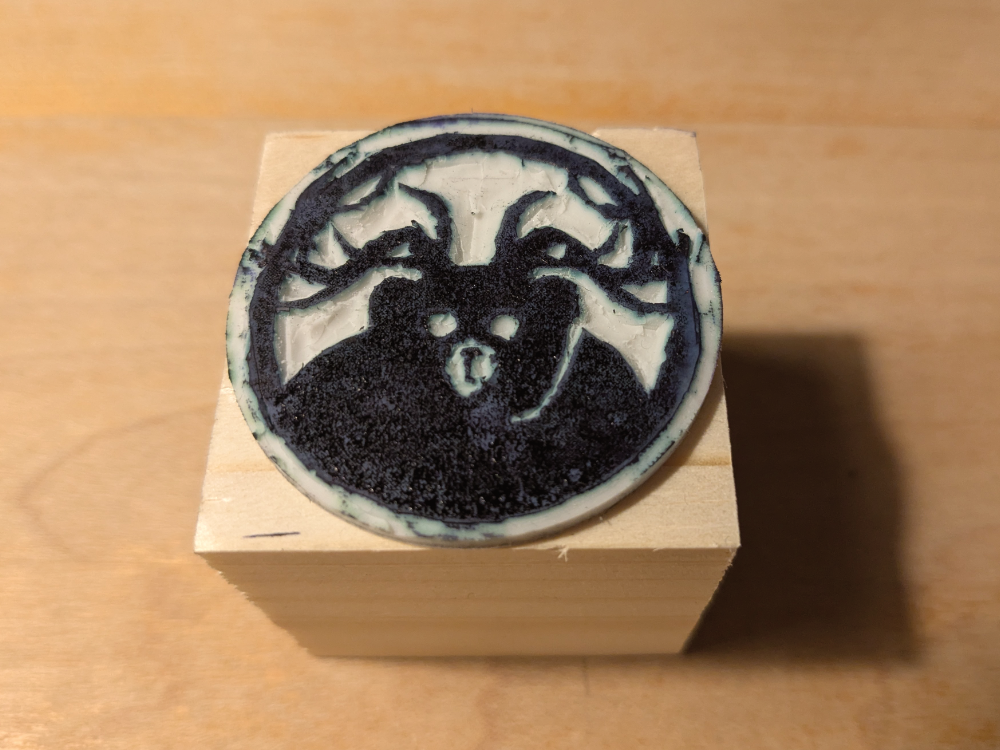
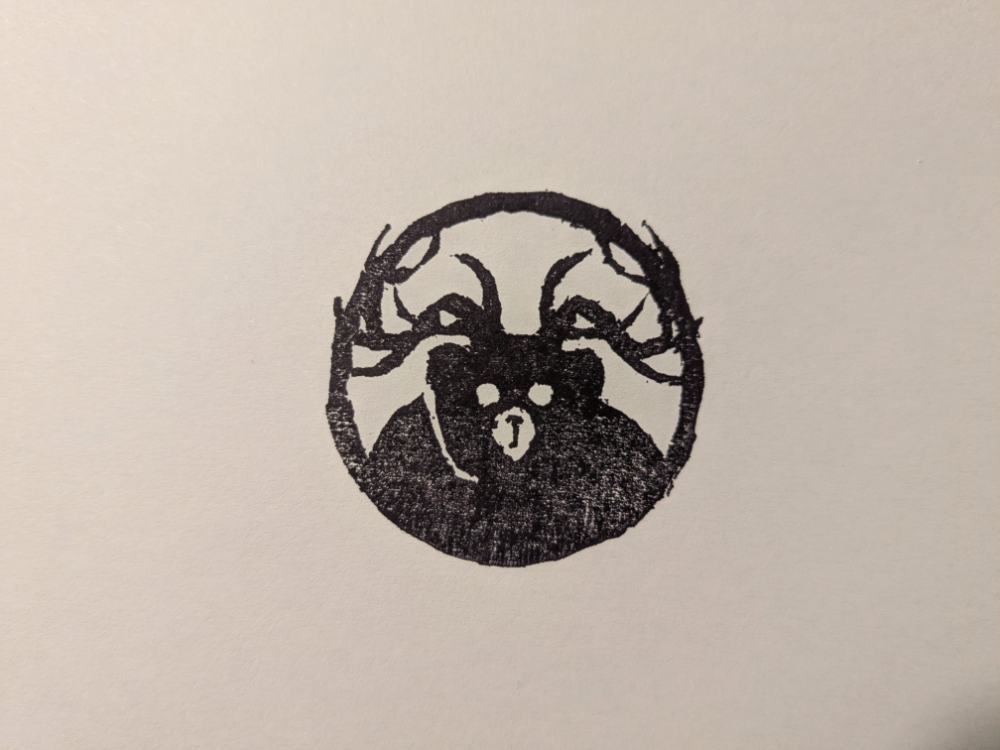

entry
Multiplying things
1,030 words
State: More of an Idea
Stamps for special moments
I've been thinking about making stamps ever since we went on a trip around the world. While traveler visas today are sometimes issued digitally or not at all (i.e., when crossing the border between Schengen countries), there are still countries and border crossings, where you need to get your passport stamped on entry and on exit.
But these are not the only stamps, that can end up in a passport. When visiting Galapagos, salt lakes full of flamingos, the easter islands, tierra del fuego and other places often visited by tourists, it was often an option, to get a fancy local stamp with a nice picture of the location.
Why not make one for yourself and invent your own nation and location? After all, if they can issue a stamp, so can we... Well, it's apparently not without risk adding novelty stamps to a passport. People have been prevented from boarding flights and even had to get new passports before being able to travel further.
Well, stamps can still be used in books or to create patterns on fabrics, cards, parcels and everything else you can think of. It's also a lot of fun with kids.
Materials for stamp making
While there is the well known potato-stamp option, the stamps are not very durable and also don't really seem a good enough option for designs with lots of fine details.
I've previously been playing around with linoleum plates and plywood for postcard prints. The material is however rather hard to carve and tricky to print without a press. While gouache works, the ink recommended is not suitable for printing projects with little kids.
As I learnt not a lot of time ago, there are also blank rubber-blocks sold for stamp making. Maybe you have been carving erasers into stamps during school? Rubber is similar in density and hardness – a very soft material, that can be carved using the same tools as the other options above. I use ESSDEE blanks (because they are sold at my local art store), but there is a ton of different rubber blanks available on the internet.
Carving is easy. Due to it's softness, there is hardly a danger for the hands. and the material still holds fine details. Depending on size, a small inkpad is enough to make marks on paper.
Copying a desing to rubber
While it's easy to print stuff on paper, rubber seems tricky. The easiest method to bring your prints to the rubber is a toner transfer method. Using a dab of acetone it's simple, to transfer a laser print to a piece of rubber:
- Print your desired motive on paper using a laser printer. I used an old brother printer (black & white only).
- Cut it out and place it facedown on the rubber
- Using a cotton pad, dab the backside of the paper with acetone. Part of the toner will stick to the rubber.
- Wait until it's dry
- Start carving using a small blade kit. An x-acto knife also seems to work very well
- When finished glue the rubber on a piece of wood, use an inkpad and start stamping
- Closely look at the outcome and adjust some edges if necessary.
This also directly mirrors the print thus making it easy to make text prints - no need to mirror the design. Not all printers seem to work equally well - the outcome most probably depends on heat applied during printing and also on toner. I noticed, that using to much acetone can disolve details to much. But a lot can be fixed while carving.
Carving
Carving precise lines is harder than I thought. I normally carve the outline of the print (i.e., the black stuff from the transfer stays, the rest has to go).
I don't cut through the whole rubber assuming, that this gives the stamp more durability and stability. Cutting an incline supposedly results in a more durable stamp where details are less prone to break away.
Stamping
The following image shows a first attempt – a homemade stamp of the Hirschelbrummbär. The size is 4.5cm x 4.5cm, the stamp is mounted on a wooden block that can be used as a crude handle.

And the outcome. Quality varies a bit, the second "press" is lighter in colour, but more uniform and tends to have less of the fabric pattern.

Missing things
- The printing gives a pattern, maybe from the inkpad. Maybe it works better with different paper?
- Not sure, if slightly sanding the block leads to better outcomes
- I'll have to try different Inks
- More stamps
Sources
- Youtube-Link: the basics of carving small text – Not my first and only source, but it sums up everything neatly. Also, this is probably the best example for carving.
- Youtube-Link: a handdrawn rubber-stamp – Similar in content, shows a nice handdrawn stamp. Uses a similar tool I use for carving, includes a nice gold finish.
- Youtube-Link: video of traditional japanese wood stamp carving – completely different and way harder to replicate.